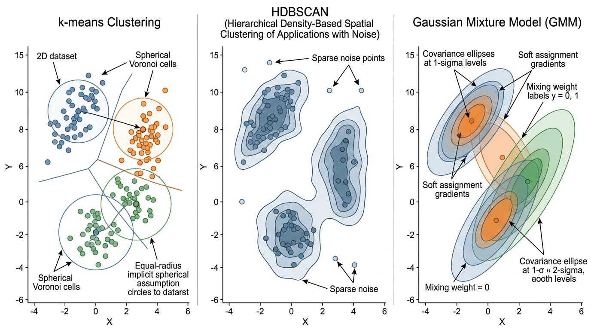
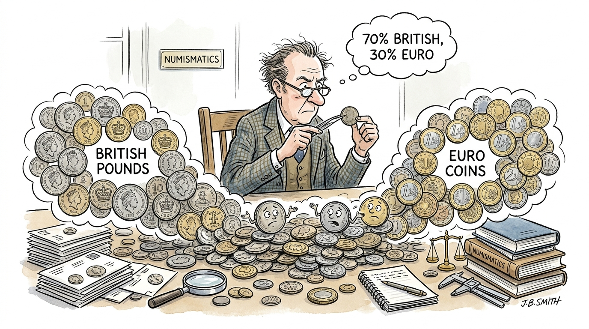

"I projected 20,000 dimensions onto two. Lost 19,998 of them. Kept the ones that matter."
A UMAP Embedding With No Regrets
When a dataset has more than a handful of features, visual exploratory data analysis (EDA) breaks down. Scatter matrices grow quadratically; human perception stalls at three dimensions. Clustering algorithms partition data into groups without supervision, revealing structure that no single plot can show. Dimensionality reduction algorithms compress high-dimensional data into two or three dimensions for visualization, preserving the relationships that matter most. Together, they form the computational backbone of exploratory discovery. This section develops the mathematics and implementation of three clustering methods (k-means, HDBSCAN, Gaussian mixture models) and two projection methods (Principal Component Analysis (PCA), Uniform Manifold Approximation and Projection (UMAP)), showing the geometric assumptions each one makes and when those assumptions help or hurt.
1. Clustering: Partitioning Without Labels
Imagine dropping 20,000 unlabeled cell samples into a table: too many to sort by hand, too many features to plot on a screen, and no ground-truth categories to guide you. How do you find the groups that nature put there? That is the problem clustering and dimensionality reduction solve together, and these algorithms form the standard toolkit for attacking it.
In the EDA inquiry cycle from Section 25.1, the Relate phase asks "which observations are similar?" Clustering algorithms answer this question formally. Given a dataset \(\mathbf{X} = \{\mathbf{x}_1, \ldots, \mathbf{x}_N\}\) where each \(\mathbf{x}_i \in \mathbb{R}^d\), a clustering algorithm assigns each point to a group such that points within a group are more similar to each other than to points in other groups.
Clustering automatically discovers groups in data when no predefined labels exist. It matters because most real datasets arrive without category labels, and inspecting thousands of observations by hand is infeasible; clustering lets the data suggest its own categories. Every clustering algorithm defines a notion of similarity (typically a distance metric), then optimizes an objective that makes within-group similarity high and between-group similarity low. Use clustering over supervised classification when you have no labels at all. Prefer it over manual grouping when the dataset exceeds a few hundred points, and over simple thresholding when you suspect the data contains more than two natural groups or groups that resist separation along a single feature.
The definition of "similar" is where clustering methods diverge. Each algorithm embodies a different geometric assumption about what clusters look like, and choosing the right algorithm requires understanding those assumptions. In short: the clustering method you choose defines what a "cluster" means, so the choice of algorithm is itself a scientific claim about the geometry of your data. Figure 25.3 illustrates these geometric assumptions side by side. Figure 25.2.1 illustrates Clustering algorithm geometric assumptions comparison.

1.1 k-Means: Spherical Clusters
What. k-means partitions \(N\) data points into \(k\) clusters by minimizing the total within-cluster variance, known as inertia (the sum of squared distances from each point to its assigned centroid):
$$J = \sum_{j=1}^{k} \sum_{\mathbf{x}_i \in C_j} \|\mathbf{x}_i - \boldsymbol{\mu}_j\|^2$$where \(C_j\) is cluster \(j\) and \(\boldsymbol{\mu}_j = \frac{1}{|C_j|}\sum_{\mathbf{x}_i \in C_j} \mathbf{x}_i\) is its centroid.
Why. k-means is fast (\(O(Nkd)\) per iteration), deterministic given initial centroids, and produces tight, interpretable clusters. It is the right first choice when you expect roughly spherical clusters of similar size.
How. Lloyd's algorithm alternates two steps: (1) assign each point to its nearest centroid, (2) recompute centroids as the mean of assigned points. Repeat until convergence or a maximum number of iterations.
When. Use k-means when clusters are roughly spherical and equally sized, when you know (or can estimate) \(k\), and when you need speed. Avoid k-means when clusters have irregular shapes, vastly different densities, or when outliers are prevalent.
import numpy as np
from sklearn.cluster import KMeans
from sklearn.preprocessing import StandardScaler
from sklearn.datasets import load_breast_cancer
# Load and scale data
data = load_breast_cancer()
X = StandardScaler().fit_transform(data.data) # z-score each feature
# Fit k-means with k=2 (matching the known two diagnoses)
kmeans = KMeans(n_clusters=2, n_init=10, random_state=42)
labels_km = kmeans.fit_predict(X)
# Check agreement with true labels
# k-means labels are arbitrary (0/1), so check both orientations
from sklearn.metrics import adjusted_rand_score
ari = adjusted_rand_score(data.target, labels_km)
print(f"k-means (k=2): Adjusted Rand Index = {ari:.3f}")
print(f"Inertia: {kmeans.inertia_:.1f}")
print(f"Cluster sizes: {np.bincount(labels_km)}")StandardScaler preprocessing. The Adjusted Rand Index (ARI), a measure of agreement between two clusterings corrected for chance, compares predicted clusters to the true diagnosis labels; 1.0 indicates perfect agreement, 0.0 indicates random assignment.k-means (k=2): Adjusted Rand Index = 0.491
Inertia: 11348.6
Cluster sizes: [175 394]k-means minimizes Euclidean distance. If one feature ranges from 0 to 1000 and another from 0 to 1, the first feature dominates all distance calculations, making the second feature invisible. Standard scaling (z-scoring, where each feature is transformed to zero mean and unit variance) is the minimum preprocessing step before any distance-based method. For features with heavy tails, consider robust scaling (using median and interquartile range) or quantile transformation.
Step-Through: Lloyd's k-Means Algorithm
Trace through k-means with \(k=2\) on five 1D points: \(\{1, 2, 8, 9, 10\}\).
Initialization: Suppose the two centroids are randomly placed at \(\mu_1 = 2\) and \(\mu_2 = 9\).
Iteration 1, Assign: Compute distances. Point 1: \(|1-2|=1\) vs \(|1-9|=8\), assign to \(C_1\). Point 2: \(|2-2|=0\) vs \(|2-9|=7\), assign to \(C_1\). Point 8: \(|8-2|=6\) vs \(|8-9|=1\), assign to \(C_2\). Point 9: \(|9-2|=7\) vs \(|9-9|=0\), assign to \(C_2\). Point 10: \(|10-2|=8\) vs \(|10-9|=1\), assign to \(C_2\). Clusters: \(C_1 = \{1,2\}\), \(C_2 = \{8,9,10\}\).
Iteration 1, Update: \(\mu_1 = (1+2)/2 = 1.5\). \(\mu_2 = (8+9+10)/3 = 9.0\).
Iteration 2, Assign: Recompute distances with new centroids. All assignments stay the same (point 8 is still closer to 9.0 than to 1.5). Convergence reached.
Final inertia: \(J = (1-1.5)^2 + (2-1.5)^2 + (8-9)^2 + (9-9)^2 + (10-9)^2 = 0.25 + 0.25 + 1 + 0 + 1 = 2.5\).
1.2 HDBSCAN: Density-Based Clustering
What. HDBSCAN (Hierarchical Density-Based Spatial Clustering of Applications with Noise) finds clusters as regions of high density separated by regions of low density. Unlike k-means, it does not require you to specify the number of clusters, and it can identify points that belong to no cluster (noise).
Why. Real data rarely forms neat spheres. Biological cell types form elongated manifolds; chemical compound families occupy irregular regions of descriptor space; social network communities have arbitrary shapes. HDBSCAN handles all of these because it defines clusters by density, not geometry.
How. HDBSCAN builds a hierarchy of density-based clusters using a concept called mutual reachability distance. For two points \(\mathbf{x}_i\) and \(\mathbf{x}_j\), the mutual reachability distance with respect to a neighborhood size \(k\) is:
$$d_{\text{mreach}}(\mathbf{x}_i, \mathbf{x}_j) = \max\big(\text{core}_k(\mathbf{x}_i),\; \text{core}_k(\mathbf{x}_j),\; d(\mathbf{x}_i, \mathbf{x}_j)\big)$$where \(\text{core}_k(\mathbf{x})\) is the distance from \(\mathbf{x}\) to its \(k\)-th nearest neighbor. Sparse regions have large core distances, making them harder to bridge; this naturally separates clusters of different densities. The algorithm builds a minimum spanning tree (the shortest-total-weight tree connecting all points in the mutual reachability graph) and constructs a cluster hierarchy by removing edges in decreasing order of weight. As edges are removed, connected components split into smaller sub-clusters, forming a tree of nested groupings. It then extracts the most persistent clusters using an excess-of-mass criterion, which selects the clusters that remain stable over the widest range of density thresholds.
When. Use HDBSCAN when you do not know the number of clusters, when clusters may have different shapes and densities, or when you want to identify noise points. The main hyperparameter, min_cluster_size, is interpretable: it is the smallest group you are willing to call a cluster.
import hdbscan
# HDBSCAN: no need to specify k
clusterer = hdbscan.HDBSCAN(
min_cluster_size=30, # smallest meaningful cluster
min_samples=10, # conservative density estimate
metric="euclidean",
)
labels_hdb = clusterer.fit_predict(X)
n_clusters = len(set(labels_hdb)) - (1 if -1 in labels_hdb else 0)
n_noise = (labels_hdb == -1).sum()
ari_hdb = adjusted_rand_score(data.target, labels_hdb)
print(f"HDBSCAN: {n_clusters} clusters found, {n_noise} noise points")
print(f"Adjusted Rand Index = {ari_hdb:.3f}")
print(f"Cluster sizes: {[int((labels_hdb == i).sum()) for i in range(n_clusters)]}")
print(f"Cluster persistence: {clusterer.cluster_persistence_}")sklearn.cluster.HDBSCAN, removing the need for the standalone hdbscan package.HDBSCAN: 2 clusters found, 62 noise points
Adjusted Rand Index = 0.509
Cluster sizes: [310, 197]
Cluster persistence: [0.297 0.118]Single-cell RNA sequencing produces expression profiles for thousands of individual cells. Cell types form clusters of varying density in gene expression space: rare stem cells form small, tight clusters; abundant immune cells form large, diffuse ones. The Scanpy pipeline (Wolf et al., 2018) uses a variant of density-based clustering (Leiden community detection on a k-nearest-neighbor graph) precisely because k-means would force all cell types into equally-sized spherical groups, merging rare types with common ones. HDBSCAN's ability to handle varying density makes it a natural fit for this kind of biological data, and its noise labeling identifies cells in transitional states between types.
1.3 Gaussian Mixture Models: Soft Clustering
Both k-means and HDBSCAN assign each point to exactly one cluster (or to noise), but in many datasets the boundaries between groups are genuinely fuzzy, and a hard assignment discards that uncertainty. Gaussian mixture models address this limitation by replacing hard labels with probabilities.
What. A Gaussian mixture model (GMM) assumes the data is generated by a mixture of \(k\) multivariate Gaussian distributions:
$$p(\mathbf{x}) = \sum_{j=1}^{k} \pi_j \, \mathcal{N}(\mathbf{x} \mid \boldsymbol{\mu}_j, \boldsymbol{\Sigma}_j)$$where \(\pi_j\) are mixing weights (the prior probability that a randomly drawn point belongs to component \(j\)) satisfying \(\sum_j \pi_j = 1\), \(\boldsymbol{\mu}_j\) are means, and \(\boldsymbol{\Sigma}_j\) are covariance matrices. Unlike k-means, each point gets a probability of belonging to each cluster, not a hard assignment.
Mental Model

Think of a GMM like sorting a pile of unlabeled coins by country of origin using only weight and diameter. Each country's coins form a cloud of measurements (slightly different due to manufacturing variation), and those clouds may overlap: a worn British pound might weigh the same as a new Euro coin. Rather than drawing a hard boundary and declaring every coin on one side "British," a GMM says "this coin is 70% likely British, 30% likely Euro" based on how well its weight and diameter match each country's typical spread. The shape of each country's cloud (tall and narrow for precisely minted coins, wide and flat for older ones) is captured by the covariance matrix, and the fraction of coins from each country is the mixing weight. k-means would force a hard cut through the overlap zone, losing the information that some coins are genuinely ambiguous.
Why. Soft assignments are scientifically more honest than hard ones. A data point with 55% probability of belonging to cluster A and 45% probability of belonging to cluster B should not be treated the same as a point with 99% probability. GMMs also capture ellipsoidal cluster shapes (through the covariance matrices), which is more flexible than k-means' implicit assumption of spherical clusters. (On the breast cancer dataset, 73 of 569 observations, roughly 13%, land in the ambiguous zone between clusters; a hard method would silently force each one into a single group, discarding uncertainty that may matter for clinical decisions.)
How. The Expectation-Maximization (EM) algorithm, a general iterative procedure for fitting models with latent variables, alternates between computing posterior cluster probabilities for each point (E-step) and updating the parameters \(\{\pi_j, \boldsymbol{\mu}_j, \boldsymbol{\Sigma}_j\}\) to maximize the log-likelihood (M-step). The algorithm converges to a local maximum of the likelihood.
When. Use GMMs when you need soft cluster assignments, when clusters are ellipsoidal, or when you want a generative model that can sample new data points from each cluster. The covariance type parameter controls model complexity: "full" (each cluster has its own \(d \times d\) covariance), "diag" (diagonal covariance, axis-aligned ellipsoids), or "spherical" (equivalent to k-means with soft assignments).
from sklearn.mixture import GaussianMixture
# GMM with full covariance matrices
gmm = GaussianMixture(
n_components=2,
covariance_type="full",
n_init=5,
random_state=42,
)
gmm.fit(X)
labels_gmm = gmm.predict(X)
probs_gmm = gmm.predict_proba(X) # soft assignments
ari_gmm = adjusted_rand_score(data.target, labels_gmm)
print(f"GMM (k=2, full): Adjusted Rand Index = {ari_gmm:.3f}")
print(f"BIC: {gmm.bic(X):.1f}")
print(f"Log-likelihood: {gmm.score(X) * len(X):.1f}")
# Show uncertainty: points where max probability < 0.9
uncertain = probs_gmm.max(axis=1) < 0.9
print(f"Uncertain points (max p < 0.9): {uncertain.sum()} / {len(X)}")
print(f"Mean max probability: {probs_gmm.max(axis=1).mean():.3f}")GMM (k=2, full): Adjusted Rand Index = 0.538
BIC: 29413.1
Log-likelihood: -14220.7
Uncertain points (max p < 0.9): 73 / 569
Mean max probability: 0.962If you set the covariance type to "spherical", tie all covariance values to be identical, and take the hard limit of the soft assignments (each point goes to the cluster with the highest probability), a GMM reduces exactly to k-means. This means k-means is not a separate algorithm; it is a GMM with very strong assumptions. Whenever k-means works well, a GMM with "spherical" covariance will work equally well while also providing uncertainty estimates. The extra covariance parameters of "full" GMMs buy flexibility at the cost of needing more data: fitting a \(d \times d\) covariance matrix for each cluster requires at least \(O(d^2)\) observations per cluster.
2. Dimensionality Reduction: Seeing the Invisible
Clustering partitions data into groups, but we cannot see those groups in 30-dimensional space. Dimensionality reduction compresses the data from \(\mathbb{R}^d\) to \(\mathbb{R}^2\) (or \(\mathbb{R}^3\)) while preserving as much structure as possible, where "structure" can mean global variance, local neighborhoods, or topological connectivity. Each method preserves a different notion.
2.1 PCA: Preserving Global Variance
What. Principal Component Analysis finds the linear projection that maximizes retained variance. The first principal component is the direction of maximum variance; the second is the direction of maximum variance orthogonal to the first; and so on. Mathematically, PCA computes the eigendecomposition (factoring the covariance matrix into its eigenvectors, which define the principal directions, and eigenvalues, which measure the variance along each direction) of the covariance matrix \(\mathbf{C} = \frac{1}{N-1}\mathbf{X}^\top \mathbf{X}\), and projects data onto the top \(m\) eigenvectors.
Why. PCA is linear, fast (\(O(Nd^2)\)), and has a clean mathematical interpretation: each component captures a fraction of the total variance, and the cumulative explained variance tells you how much information you have retained. For datasets where the main variation is along linear axes, PCA projections are excellent.
When. In most workflows, PCA is a good first pass. It is fast enough to be free, and it establishes a baseline: if PCA separates your clusters, you do not need fancier methods. PCA fails when the data lies on a curved manifold (a surface that is locally flat but globally curved, like the surface of a sphere), because it can only find linear subspaces.
from sklearn.decomposition import PCA
import plotly.express as px
import pandas as pd
# PCA projection to 2D
pca = PCA(n_components=2, random_state=42)
X_pca = pca.fit_transform(X)
print(f"Explained variance: PC1={pca.explained_variance_ratio_[0]:.3f}, "
f"PC2={pca.explained_variance_ratio_[1]:.3f}")
print(f"Total retained: {pca.explained_variance_ratio_.sum():.3f}")
# Visualize with cluster labels
proj_df = pd.DataFrame({
"PC1": X_pca[:, 0],
"PC2": X_pca[:, 1],
"Diagnosis": data.target_names[data.target],
"k-means": [f"Cluster {l}" for l in labels_km],
})
fig = px.scatter(
proj_df, x="PC1", y="PC2", color="Diagnosis",
opacity=0.6, title="PCA Projection of Breast Cancer Data",
labels={"PC1": f"PC1 ({pca.explained_variance_ratio_[0]:.1%} var)",
"PC2": f"PC2 ({pca.explained_variance_ratio_[1]:.1%} var)"},
)
fig.update_traces(marker=dict(size=5))
fig.show()Explained variance: PC1=0.443, PC2=0.190
Total retained: 0.6332.2 UMAP: Topological Dimensionality Reduction
PCA's linearity is both its strength and its ceiling: when the meaningful structure in a dataset curves through high-dimensional space, a linear projection will flatten that curvature and overlap groups that are genuinely distinct. Nonlinear methods lift this restriction.
What. UMAP (Uniform Manifold Approximation and Projection) is a nonlinear dimensionality reduction method grounded in topological data analysis, the branch of mathematics that studies properties of shapes preserved under continuous deformation (stretching and bending, but not tearing). Unlike PCA, which preserves global linear variance, UMAP preserves the topological structure of the data: the way points are connected through neighborhoods.
Why. High-dimensional data often lives on curved manifolds. A sheet of paper crumpled into a ball occupies three dimensions, but its intrinsic structure is two-dimensional. PCA would project the crumpled ball onto a plane, overlapping distant parts of the sheet. UMAP uncrumples it by preserving neighborhood relationships: points that are close on the sheet stay close in the projection, even though they may be far apart in the crumpled 3D ball.
UMAP preserves which points are neighbors, not how far apart they are; this makes it powerful for revealing cluster structure but unreliable for interpreting inter-cluster distances.
How. UMAP works in three stages:
- Build a fuzzy topological representation. For each point, compute distances to its \(k\) nearest neighbors and convert them to a fuzzy simplicial set, a weighted graph that generalizes the notion of a neighborhood by assigning each edge a membership strength between 0 and 1. The key formula normalizes distances relative to each point's local density: $$w_{ij} = \exp\left(-\frac{d(\mathbf{x}_i, \mathbf{x}_j) - \rho_i}{\sigma_i}\right)$$ where \(\rho_i\) is the distance to the nearest neighbor (setting the local scale) and \(\sigma_i\) is chosen so that the sum of weights matches \(\log_2(k)\).
- Symmetrize. The fuzzy graph is made symmetric: \(w_{ij}^{\text{sym}} = w_{ij} + w_{ji} - w_{ij} \cdot w_{ji}\). This ensures that if \(i\) considers \(j\) a neighbor, or \(j\) considers \(i\) a neighbor, the edge exists.
- Optimize the low-dimensional layout. Initialize a low-dimensional representation (typically via spectral embedding, which uses the eigenvectors of the graph Laplacian to find an initial layout that respects the graph structure, or random initialization) and optimize it so that the low-dimensional fuzzy graph matches the high-dimensional one. The loss function is the cross-entropy between the two fuzzy sets, measuring how much information is lost when the low-dimensional graph approximates the high-dimensional one, and optimization uses stochastic gradient descent with negative sampling, a technique that approximates the full repulsive force calculation by randomly selecting a small number of non-neighbor points to push apart at each step.
Checkpoint
So far: UMAP builds a weighted neighbor graph in high-dimensional space, symmetrizes it so neighborhood relationships are mutual, then optimizes a low-dimensional layout whose neighbor graph matches the original, using cross-entropy as the measure of mismatch.
The result is a 2D (or 3D) embedding that faithfully represents local neighborhoods while also capturing much of the global structure.
Common Misconception
Readers frequently assume that distances between clusters in a UMAP plot reflect true distances in the original high-dimensional space. They do not. UMAP preserves neighborhood connectivity (which points are near each other), not metric distances (how far apart they are). Two clusters that appear widely separated in a UMAP embedding may actually be close in the original space, and two clusters that appear adjacent may be far apart. Never interpret the gap between UMAP clusters as a measure of dissimilarity; instead, compute distances in the original feature space or use PCA (which does preserve relative scale) to verify distance-based claims.
import umap
# UMAP projection to 2D
reducer = umap.UMAP(
n_neighbors=30, # local neighborhood size
min_dist=0.3, # minimum distance between points in embedding
n_components=2,
metric="euclidean",
random_state=42,
)
X_umap = reducer.fit_transform(X)
# Visualize with diagnosis labels and HDBSCAN clusters
proj_df = pd.DataFrame({
"UMAP1": X_umap[:, 0],
"UMAP2": X_umap[:, 1],
"Diagnosis": data.target_names[data.target],
"HDBSCAN": [f"Cluster {l}" if l >= 0 else "Noise"
for l in labels_hdb],
})
fig = px.scatter(
proj_df, x="UMAP1", y="UMAP2", color="Diagnosis",
opacity=0.6,
title="UMAP Projection of Breast Cancer Data",
)
fig.update_traces(marker=dict(size=5))
fig.show()n_neighbors=30. The n_neighbors parameter controls the balance between local and global structure: small values emphasize fine-grained clusters; large values reveal broader patterns.Real-World Application: Spotify's Music Recommendation Engine
Spotify has described using a combination of PCA and approximate nearest-neighbor clustering on audio feature embeddings (tempo, energy, valence, spectral characteristics) to organize its catalog of over 100 million tracks into taste neighborhoods. When a user listens to a sequence of songs, the system projects listening history into a reduced feature space and identifies which cluster centroids the session orbits, then recommends tracks from adjacent clusters the user has not yet explored. The dimensionality reduction step is essential: raw audio features span hundreds of dimensions, and clustering directly in that space would suffer from the distance concentration problem, where all pairwise distances converge toward the same value as the number of dimensions grows, making it impossible to distinguish "near" from "far".
The two most important UMAP hyperparameters are n_neighbors and min_dist. n_neighbors controls the scale of structure preservation: small values (5 to 15) emphasize local clusters and substructure; large values (50 to 200) capture broader, more global patterns. min_dist controls how tightly points are packed in the embedding: small values (0.0 to 0.1) create tight, separated clusters ideal for cluster identification; large values (0.3 to 0.8) preserve more of the topological continuity between groups. These are not arbitrary tuning knobs; they reflect a genuine tradeoff between resolution scales, analogous to choosing the magnification on a microscope.
3. PCA vs. UMAP: When to Use Which
PCA and UMAP are complementary, not competitive. A robust EDA protocol uses both.
| Property | PCA | UMAP |
|---|---|---|
| Linearity | Linear only | Nonlinear |
| Preserves | Global variance | Local + global topology |
| Speed (N=10k, d=100) | ~0.1 seconds | ~5 seconds |
| Interpretability | Loadings show feature contributions | Axes have no inherent meaning |
| Reproducibility | Deterministic (given data) | Stochastic (set random_state) |
| Outlier handling | Sensitive (outliers dominate variance) | Robust (local neighborhoods absorb them) |
| New data | Simple projection via loadings | Requires parametric UMAP or re-fit |
Start with PCA to understand linear variance structure and identify dominant axes. Move to UMAP when PCA projections show overlapping clusters that you suspect have nonlinear boundaries. Always report the PCA explained variance as a baseline.
For datasets with more than 100,000 points, CPU-based UMAP becomes slow (minutes to hours). NVIDIA's cuML library provides a GPU implementation that is API-compatible with the reference umap-learn package: replace import umap with from cuml.manifold import UMAP and the same code runs 10x to 50x faster on a GPU. This single-line change replaces what would otherwise require rewriting the algorithm in CUDA, reducing 200 lines of GPU kernel code to one import statement. As introduced in Chapter 5, the choice of computational backend should not change your scientific workflow.
4. Combining Clustering and Projection
The previous sections treated clustering and projection as separate tools; in practice, the greatest analytical leverage comes from using them together in a deliberate sequence.
The most powerful exploratory workflow combines clustering in the original high-dimensional space with visualization in a UMAP projection. This avoids a common pitfall: clustering in the UMAP embedding. UMAP distorts distances (it preserves topology, not metric structure), so clusters found in the 2D projection may not correspond to genuine groups in the original space.
# The correct workflow: cluster in high-D, visualize in UMAP
# Step 1: Cluster in original 30-dimensional space
clusterer = hdbscan.HDBSCAN(min_cluster_size=30, min_samples=10)
labels = clusterer.fit_predict(X) # X is 30-dimensional
# Step 2: Project to 2D with UMAP (for visualization only)
reducer = umap.UMAP(n_neighbors=30, min_dist=0.3, random_state=42)
X_2d = reducer.fit_transform(X)
# Step 3: Overlay cluster labels on the UMAP projection
viz_df = pd.DataFrame({
"UMAP1": X_2d[:, 0], "UMAP2": X_2d[:, 1],
"Cluster": [f"Cluster {l}" if l >= 0 else "Noise" for l in labels],
"Diagnosis": data.target_names[data.target],
"Probability": clusterer.probabilities_,
})
fig = px.scatter(
viz_df, x="UMAP1", y="UMAP2", color="Cluster",
size="Probability", size_max=8, opacity=0.7,
title="HDBSCAN Clusters (30D) Projected onto UMAP (2D)",
hover_data=["Diagnosis"],
)
fig.show()A persistent limitation of UMAP and t-SNE has been instability: different random seeds produce visually different layouts, making it difficult to compare embeddings across runs or datasets. PaCMAP (Pairwise Controlled Manifold Approximation Projection; Wang et al., 2021) addressed this partially by balancing attraction between near pairs and repulsion between far pairs, producing more stable layouts than UMAP across random seeds. PHATE (Potential of Heat-diffusion for Affinity-based Transition Embedding; Moon et al., 2019, Nature Biotechnology) takes a different approach, using diffusion geometry to capture both local and global structure with greater stability than t-SNE. As of 2024, aligned embedding methods such as UMAP's built-in aligned_umap (added in umap-learn 0.5) allow direct visual comparison across batches or time points by jointly optimizing layouts over multiple related datasets. These methods signal a shift from treating embeddings as one-off visualizations toward treating them as reproducible, comparable scientific instruments.
5. Choosing the Right Clustering Algorithm
The table below summarizes the practical decision criteria. No single algorithm dominates; the choice depends on what you know about your data and what you want from the analysis.
| Criterion | k-Means | HDBSCAN | GMM |
|---|---|---|---|
| Must specify \(k\)? | Yes | No | Yes (use BIC) |
| Cluster shape | Spherical | Arbitrary | Ellipsoidal |
| Soft assignments? | No | Yes (probabilities) | Yes (probabilities) |
| Handles noise? | No (all points assigned) | Yes (labels noise as -1) | No (all points assigned) |
| Scalability | Excellent (\(O(Nk)\)) | Good (\(O(N \log N)\)) | Moderate (\(O(Nk d^2)\)) |
| Best for | Quick baseline | Unknown structure | Probabilistic analysis |
A practical protocol: (1) run k-means with several values of \(k\) and plot the elbow curve (a plot of inertia versus \(k\) that typically shows a sharp bend, or "elbow," at the point where adding more clusters yields diminishing returns); (2) run HDBSCAN to discover the number of clusters automatically; (3) if the two methods agree on \(k\), fit a GMM to get soft assignments and cluster-conditional distributions. If they disagree, the disagreement itself is informative: it often means the data has clusters at multiple scales of density.
In very high dimensions (\(d > 100\)), all pairwise distances converge. The ratio of the maximum to minimum distance approaches 1 as \(d\) grows, making it impossible to distinguish "near" from "far." This is why clustering 20,000-gene expression profiles directly tends to perform poorly: you must first reduce dimensionality (PCA to 50 components is a common choice) before clustering. UMAP and HDBSCAN both handle moderate dimensionality well (up to a few hundred features), but for truly high-dimensional data, a PCA preprocessing step is not optional. We will see in Chapter 26 how learned representations provide a more principled alternative to PCA for dimensionality reduction before clustering.
Try It: Cluster and Visualize the Iris Dataset Three Ways
This mini-project walks you through the full cluster-then-project workflow on a small, well-understood dataset using only scikit-learn, hdbscan, umap-learn, and matplotlib.
- Load and scale. Load the Iris dataset with
sklearn.datasets.load_iris(). Standardize all four features withStandardScaler. Split the 150 samples into the scaled feature matrixXand the species labelsy(which you will use only for evaluation, not for clustering). - Cluster three ways. Fit k-means (
k=3), HDBSCAN (min_cluster_size=10), and a GMM (n_components=3, covariance_type="full") on the scaled features. Store the predicted labels from each method. For the GMM, also store the soft-assignment probabilities withpredict_proba. - Project with PCA and UMAP. Compute a 2D PCA projection and a 2D UMAP projection (
n_neighbors=15, min_dist=0.1) of the same scaled data. Print the PCA explained variance ratio for the two components. - Visualize. Create a 3-by-2 grid of scatter plots (three clustering methods by two projection methods). Color each plot by its clustering labels. Add a title to each subplot indicating the method pair (for example, "k-means on PCA"). Compare visually: which clustering method best separates the known species in each projection?
- Quantify. Compute the Adjusted Rand Index between each clustering method's labels and the true species labels. Print a small table of ARI scores. Identify which method performs best and write one sentence explaining why, referencing the geometric assumptions of that method and the shape of the Iris clusters.
Exercise 25.2.1
You run k-means with \(k=3\) on a dataset and obtain cluster sizes of 450, 430, and 20. You then run HDBSCAN on the same data and it finds two clusters (sizes 440 and 440) plus 20 noise points. What do the 20 points likely represent, and which algorithm's treatment of them is more scientifically appropriate? Justify your answer by referencing the geometric assumptions of each method.
Hint
Consider what k-means is forced to do with every point (including outliers) versus what HDBSCAN can do with points that do not belong to any dense region. Ask yourself: does assigning an outlier to its "nearest" centroid add signal or noise to downstream analysis?Lab: Sensitivity of UMAP Embeddings to Hyperparameters
Goal: Observe how n_neighbors and min_dist reshape a UMAP embedding, building intuition for the local-vs-global structure tradeoff.
Tools: Python with umap-learn, scikit-learn, and matplotlib. Use sklearn.datasets.load_digits() (1,797 images of handwritten digits in 64 dimensions).
Procedure: Create a 4x3 grid of UMAP scatter plots. Vary n_neighbors across rows (5, 15, 50, 200) and min_dist across columns (0.0, 0.25, 0.8). Color every plot by the true digit label. Fix random_state=42 for reproducibility.
What to vary: The two hyperparameters above. Optionally, repeat the entire grid with a different random_state to observe stochastic variation.
What to observe: (1) At which n_neighbors value do the ten digit classes first separate into distinct islands? (2) How does increasing min_dist change the spacing within and between clusters? (3) Are there digit pairs (such as 3 and 8, or 4 and 9) that remain merged at low n_neighbors but separate at higher values? Record your observations and write one sentence explaining why large n_neighbors values reveal inter-cluster structure that small values miss.
Exercises
Exercise 25.4 (Conceptual): Explain why clustering in a UMAP embedding can produce misleading results. What specific property of UMAP makes distances in the embedding unreliable for cluster assignment? How does this relate to the distinction between topological and metric structure?
Exercise 25.5 (Coding): Generate a synthetic dataset with sklearn.datasets.make_moons(n_samples=1000, noise=0.1). Fit k-means (k=2), HDBSCAN, and a GMM (k=2). Visualize the cluster assignments for each method. Which algorithm correctly separates the two moons, and why do the others fail?
Exercise 25.6 (Analysis): Using the breast cancer dataset, fit GMMs with \(k = 2, 3, 4, 5\) and compare their BIC values. Does the BIC-optimal \(k\) match the known number of diagnostic categories? If not, propose a scientific interpretation of the additional clusters.